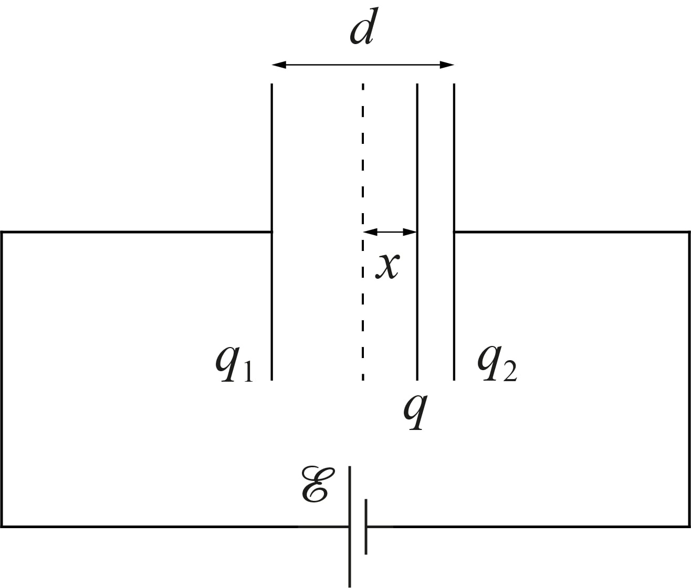
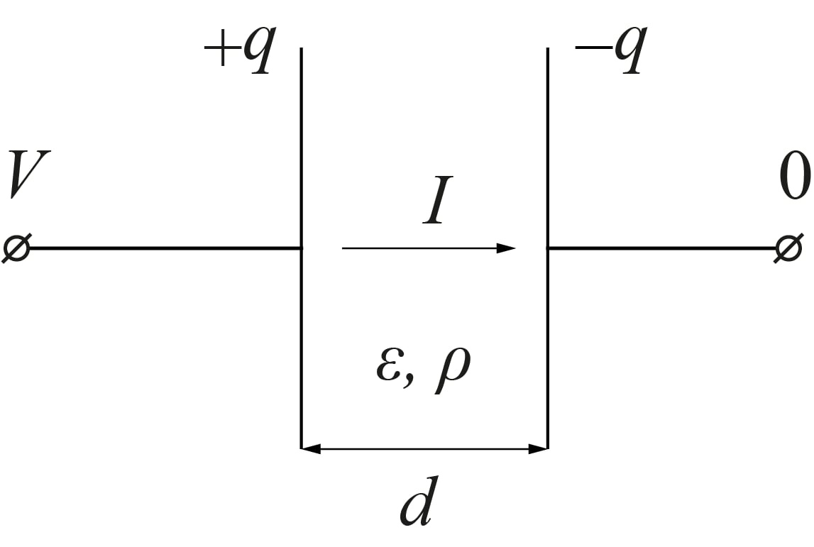
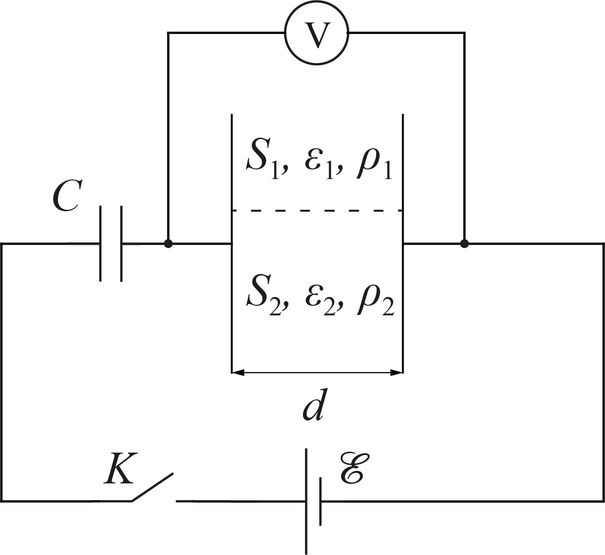

W22 (2022) — English translation
In the middle between the identical uncharged metal plates of a flat capacitor with an area $S$ and a distance between them $d\ll{\sqrt{S}}$ there is a dielectric plate of mass $m$ of the same shape, charged uniformly over the surface with a charge $q>0$. The capacitor plates were connected to a constant voltage source $\mathcal{E}$ with zero internal resistance. Then the plate is released. When moving, the capacitor plates remain motionless. Let us denote by $x$ the deviation of the plate from the initial position, by $q_1$ the charge of the left plate, and by $q_2$ the charge of the right plate.

It can be shown that the dependence of the displacement of the plate $x(t)$ on time has the following form $$x(t)=Ae^{at}+Be^{-at}+C, $$ где $a$ зависит только от $\mathcal{E}$, $S$, $d$, $q$ и $m$, а $A$, $B$ и $C$ are determined by the initial conditions.
A flat capacitor with plate area $S$ and distance between them $d\ll{\sqrt{S}}$ is filled with a dielectric with dielectric constant $\varepsilon$ and resistivity $\rho$. The dielectric and the plates have good electrical contact. Let the potential difference between the plates of the capacitor be $V$.

From the two previous points it follows that the circuit of such a capacitor in an electrical circuit is equivalent to some connection of a resistor with resistance $R$ and a capacitor with capacitance $C$.
Now the complex capacitor is connected to a constant voltage source $\mathcal{E}$, which has an internal resistance $r$. At the initial moment of time, the capacitor is not charged.
A flat capacitor with a distance between plates $d$ is filled with two dielectrics. One with dielectric constant $\varepsilon_1$, resistivity $\rho_1$ and contact area with plates $S_1$, and the other with dielectric constant $\varepsilon_2$, resistivity $\rho_2$ and contact area with plates $S_2$. Both dielectrics have good electrical contact with the capacitor plates.
This capacitor in series with the capacitor $C$ is connected to a constant voltage source $\mathcal{E}$, which has zero internal resistance. While the key was open, the capacitors were not charged. The voltage across a complex capacitor is measured with an ideal voltmeter $V$.

$\textit{Примечание}$ : $$\int\frac{dx}{ax+b}=\frac{1}{a}\ln\left(ax+b\right)+C $$ $$\int e^{ax}dx=\frac{e^{ax}}{a}+C $$
Source: https://pho.rs/p/271